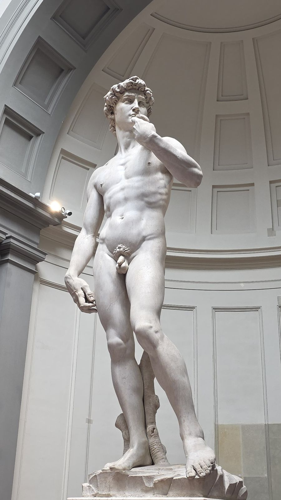
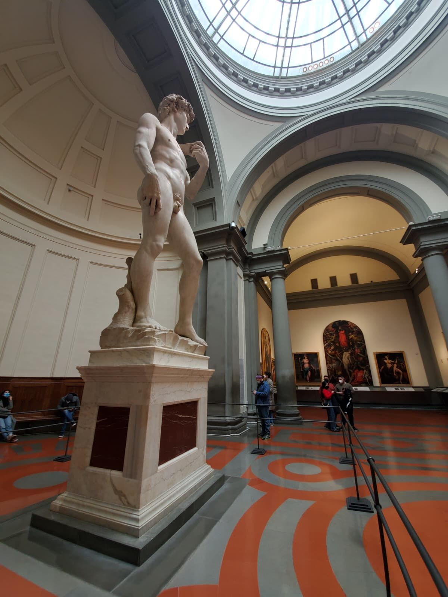
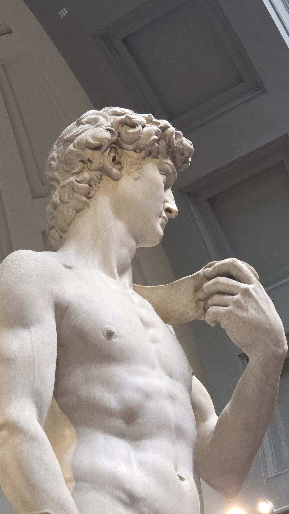
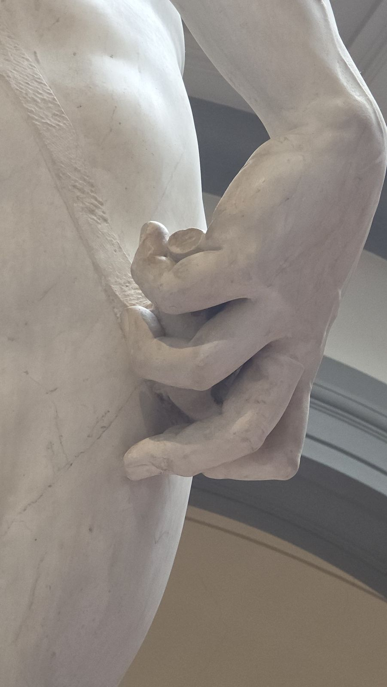
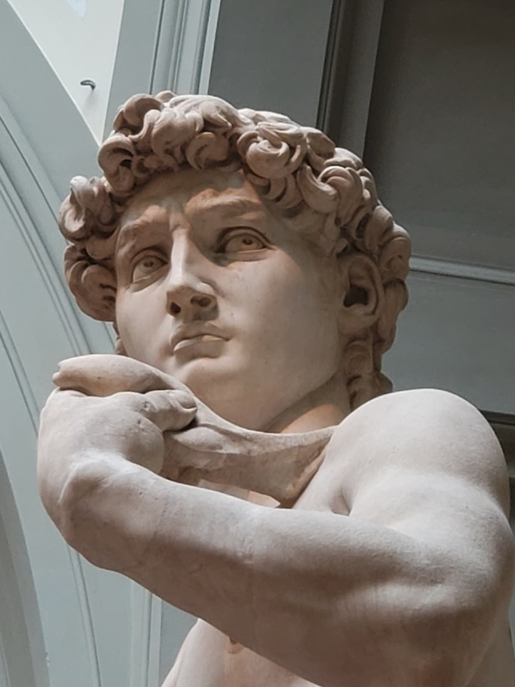
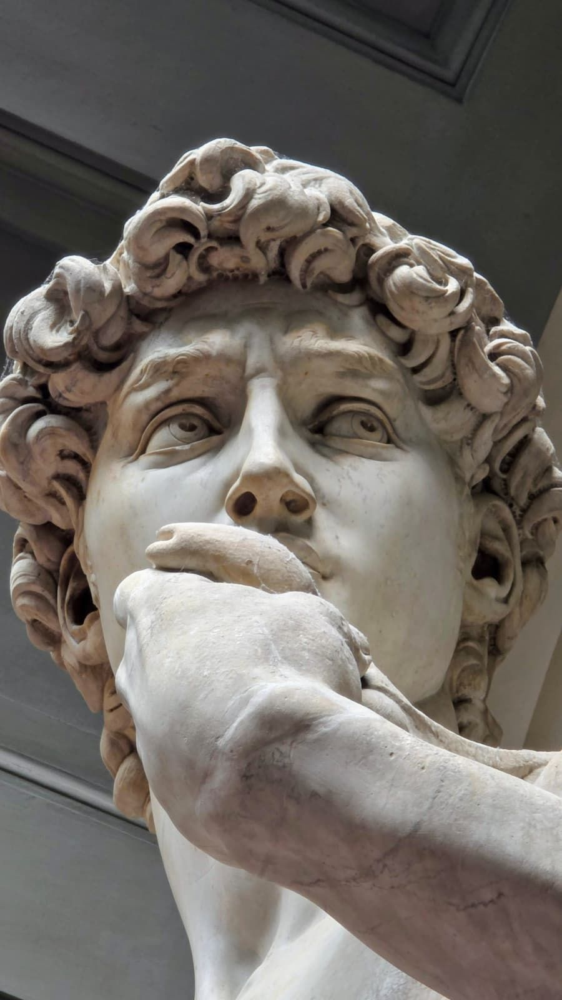
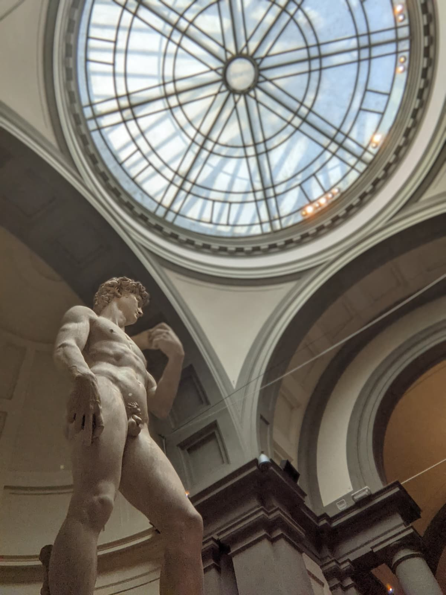
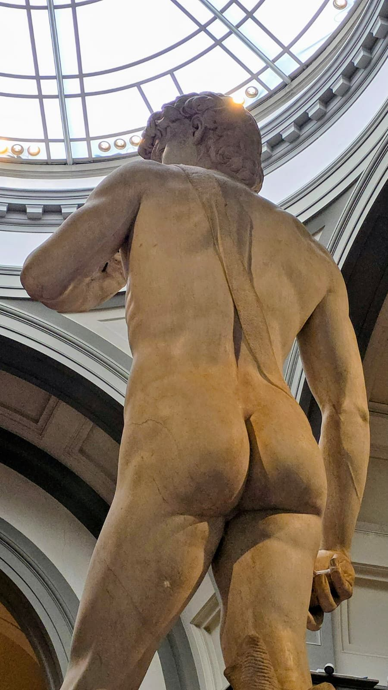
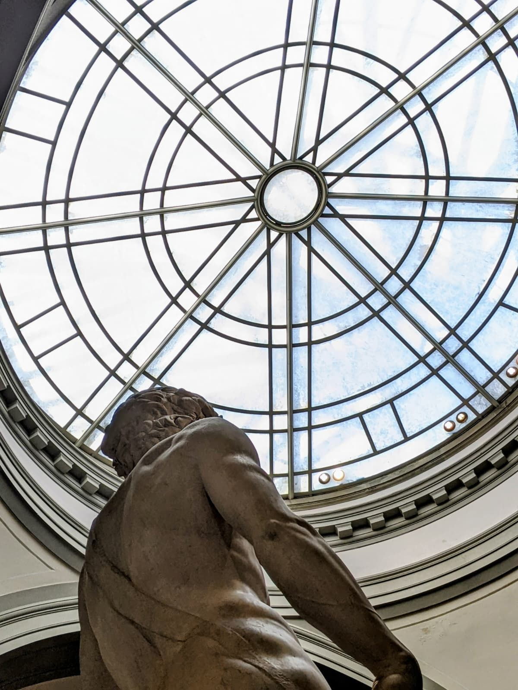

Journey 06 · Firenze Note 9 of 11 Field Note
The Power of Patrons
I have been to the Accademia more than once.
Each time, the experience was different.
The first time, you go because of David. Of course you do: everyone does. You follow the slow pull of the hallway, past the unfinished prisoners trying to escape their marble tombs, until there he is: enormous, iconic, and more than any photo could capture.

David is one of those works people already know how to recognize. Even if you have never been to Florence, you already know the outline. You know the scale of him, the posture, the turn of the head, the idea of him. He belongs to art history, to postcards, to textbooks, and to the long list of things the world has agreed are worth seeing.
The first time I saw David, it was a chilly February in Florence. I wore a shockingly pink trench coat, and my hands shook when I handed over my ticket at the entrance. We had gotten the earliest time slot mid-week, and the Accademia was almost impossibly empty.

When I came around the corner and saw the David for the first time – just me, and a long empty hallway in front of me with no one else, absolute silence – I immediately burst into tears. It wasn’t planned, I had no idea I was going to be so overwhelmed by emotion, but the feeling of seeing something so influential in my life, something that had I had known before I knew what it was, crashed over me like a wave and I cried. My husband was as shocked as I was, and wasn’t sure how to respond, trying to both understand and comfort me.
The second time I visited, I was prepared for the emotions. There were crowds of people this time, so there was no near-religious crystalline moment frozen in time, but it was still amazing to see the giant figure. More in control of my emotions, I was able to actually take in not just the David, but the surroundings, and learn more about the museum, the pieces on display, and the history of the David through a variety of books, websites, and research. I spent far longer in the Accademia than I think you are technically allowed to, but I think the security guards recognize the slightly glazed stare of someone having a resonant moment with art and there was no problem.
Women Lead in Florence offered me my third opportunity to visit the David and the Accademia. Significantly more crowded than either previous visit, and my first visit with an actual tour guide, this visit once again left me in awe of the masterpiece.
But this time, I found myself able to think beyond only the finished masterpiece and more about everything around it.
The history. The money. The marble. The workshop. The politics. The stories. The training. The city that knew how to value such a thing. The systems of patronage that made beauty possible, and the systems of power that beauty helped protect.
Florence is a city layered with history, myth, and people that are remembered as larger than life itself. Dante Alighieri and Niccolò Machiavelli influenced centuries of religious and political iconography and symbology with their literary works. Gallileo challenged our understanding of the cosmos and Brunelleschi changed the understanding of what arcitecture could do. Donatello, Leonardo da Vinci, Botticelli, and Michelangelo all left their marks on art, science, engineering and the way we still talk about genius. All are iconic on their own, and they all share a common thread: somewhere in their stories, the Medici appear.

You cannot spend much time in Florence before the Medici appear somewhere in the background. A name on a wall. A family crest. A palace. A chapel. A museum. A collection. A founder of a school or workshop. A story about banking, marriage, church influence, exile, return, ambition, strategy, taste, and control.
The Medici seemed to have touched everything in Florence, from the big icons of the city to the more subtle places their touch changed the currents of the Renaissance. The Medici and their influence seem to be everywhere, but whether or not they were “good” is a complicated question.
Their patronage was versatile and often produced public value and good, but it was inexorably tangled with ambition, image, power, and family survival. They understood that beauty could teach a city what to admire, who to remember, and whose rule to accept as natural, but they were not generous patrons floating above politics, giving beauty to the world out of pure love for the public.
That does not make what they made less beautiful, but it does make it harder to look at simply.

This is one of the tensions Florence gave me on my visit. Beautiful things can be valuable simply because they are beautiful: they do not have to become useful before they matter. A painting does not need to justify itself as a leadership lesson, a sculpture does not need to improve productivity, a piece of music does not need to become a metaphor for strategy.
Not every entry into a travel blog, even an academic one, needs to be optimized for LinkedIn metrics and maximum exposure.
And still, beautiful things do not appear from nowhere.
They require materials, makers, training, time, money, protection, and people willing to decide that something difficult and unnecessary, in the practical sense, should exist anyway.
Both things can be true at the same time. That is where patronage becomes interesting.
There is a difference between someone who collects art and someone who is a patron of art. A collector buys art, likely displays it either in their home or as a tax-sheltered loan to a museum, and the relationship between collector and art extends only as far as the exchange of money for the time spent creating.

A patron does more than buy art. A patron shapes conditions. A patron decides what gets funded and what gets preserved, displayed, studied, and celebrated. Patronage can be self-serving, and often is. It can polish reputation, secure loyalty, soften resentment, display refinement, or turn private wealth into public legitimacy.
If art collecting is about ownership, then art patronage is about influencing culture. And even self-interested patronage can leave behind something real.
The Accademia reminded me of that beyond David.
I have always loved the musical instruments room at this museum. The Stradivarius instruments are extraordinary, of course, but my favorite is the hurdy-gurdy. It looks absurd at first, almost like something from a Dr. Seuss story. Then you see it, and realize it is real. Someone had to imagine it, build it, learn it, preserve it, and eventually place it where people like me could stare at it with delight centuries later.
More than anywhere else in the museum, the instrument wing is where the chain between patron and impact becomes visible.
So, let’s talk about pianos for a moment. You can find the earliest ones in the Accademia, alongside harpsichords, violas, cellos, and a dozen other instruments both familiar and unfamiliar. Several instruments on display even carry the Medici crest, evidence of the patronage that made them possible. But the piano is an important story of art, patronage, and lasting influence.
The piano was invented by Bartolomeo Cristofori di Francesco, an Italian musical instrument maker and inventor. There is a lot of myth and circumstance mixed in with this history of Cristofori , but what is certain is that he was hired by Prince Ferdinando de Medici, a well-known lover and patron of music, and also son and heir of Cosimo III, Grand Duke of Tuscany. The Medici Prince had at least a hundred instrument artisans working for him in addition to probably countless musicians, of which Cristofori was one, and during his early years he made unique versions of existing instruments and a few new instruments. But it was his invention of the piano (which he called Arpicembalo) sometime around 1700 that is famous.
Largely unchanged between then and now, the piano marks a monumental moment in musical history: imagine, for a moment, a world where Cristofori wasn’t given the time, money and space to invent and so the piano never came to be.
How different would our music be without the influence of Beethoven, Chopin or Mozart? How would symphonic and classical music be changed, and all the genres that were influenced after them?
The piano is considered a foundational instrument in music education. Its clear layout and ability to produce harmonies make it an essential tool for understanding music theory and

composition, and many aspiring musicians begin by learning the piano. It’s versatile enough to work in nearly any genre of music, and its exceptional range makes it extremely expressive.
Perhaps something similar would have come later. Or something completely different and just as important. But patronage, and specifically Medici patronage in this case, enabled not just the creation of a musical instrument, but a cultural keystone that literally changed music forever.
That is the part I kept thinking about: What do people with extreme wealth and influence choose to make possible?
The Medici are an old version of that question, not because they were morally admirable, but because they understood something about power that feels relevant today. Wealth on the scale of the Medici family, whose assets at one point rivaled countries and religious institutions, does not exist apart from society. It needs legitimacy. It needs people to believe, or at least tolerate, the idea that one family should have so much.
For the Medici, patronage helped answer that problem.

It gave Florence things to admire. It tied family power to public beauty, and this made private ambition feel, at least in part, like civic inheritance. The city became more beautiful, more important, more culturally powerful, and the family became harder to separate from that beauty and importance.
That was not pure ethics. It was also pressure: social pressure, civic pressure, reputational pressure, and the pressure of needing public legitimacy in order to keep private power secure.
This is where my mind drifts back to my research.
In my work on AI governance, I keep circling a modern version of the same question: what happens when private actors gain enough wealth and influence to shape public life, while the systems meant to hold them accountable move too slowly, reach too unevenly, or become tangled with the same interests they are supposed to oversee?
The levers are different now. It’s not marble, chapels, and court musicians. Today, the levers are platforms, data, compute power, infrastructure, private labs, lobbying, media ecosystems, and technologies that shape how people work, learn, communicate, and understand the world.
But the question still has a familiar shape.
If a small group of people can build systems the rest of us will have to live inside, what makes them answerable to anyone beyond themselves?
Florence does not give me an answer, and the stories of the Medici certainly do not solve the problem. Instead, they complicate it.

They show that beauty can come from power. They show that public inheritance can come from private ambition. They show that self-interest and civic benefit can become tangled together in ways we should neither romanticize nor dismiss too quickly.
But, they also show that pressure matters.
Ethics alone is fragile when the rewards for ignoring it are high. Good intentions are not governance and personal virtue is not a system of accountability. If people with extreme wealth can act without consequence, many will keep choosing what benefits them.
So one of the most accessible forms of accountability may be social pressure: public attention, worker dissent, institutional refusal, reputational cost, cultural expectation, and the steady insistence that power must answer to the world it is shaping.
It is not enough by itself. It is imperfect, fragile, and constantly at risk of fading, being manipulated, or getting absorbed into branding. It is not a system but a practice, and it requires maintenance.
But when formal accountability fails, when laws move slower than technology, when institutions hesitate, when wealth seems to exceed consequence, social pressure may be one of the few levers still within reach.
The Medici understood that power needs an audience.
And that may be the part worth remembering now.
I walked through the Accademia thinking about David, yes. About the body in marble, the impossible hand, the scale of genius. But I also thought about the unfinished forms along the hallway and the instruments in their cases. I thought about the people who made them, the people who paid for them, the people who preserved them, and the people who still cross oceans to stand in front of them.
Florence is full of reminders that powerful people leave fingerprints on the future.
Some of those fingerprints become wounds, others become beauty. Some become both.
The question is not whether wealth will shape the world. It already does and it always has.
The question is what we ask of it while it does.

Mentioned in
Originally published at fieldnotesfromabroad.com/2026/05/25/the-power-of-patrons/